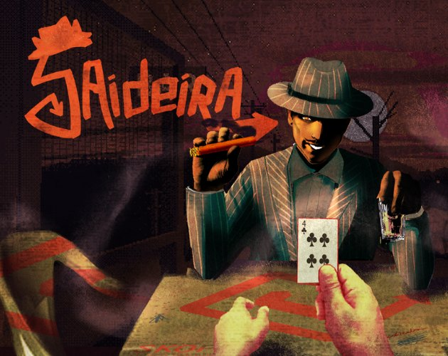

GamesJogos

Saideira
Psychological horror truco against a man in a hat who cheats. So do you. GameJamPlus 26/27.
Truco de terror psicológico contra um homem de chapéu que rouba. Você também. GameJamPlus 26/27.

Coiote's Dawn
A survivor-like where you are a coyote. 887k builds, cursed items, 3 bosses. DJUFF GameJam 2026.
Survivor-like em que você é um coiote. 887 mil builds, itens amaldiçoados, 3 bosses. DJUFF GameJam 2026.

O Plano
Journalists under a dictatorship hide the truth inside the propaganda. Point & click, in the browser.
Jornalistas sob uma ditadura escondem a verdade dentro da propaganda. Point & click no navegador.

UNSWORN
Turn-based tactics and investigation in Irkalla. A necromancer, seven days, one accusation. In development.
Tática por turnos e investigação em Irkalla. Um necromante, sete dias, uma acusação. Em desenvolvimento.


Cooking right now: QuórumCozinhando agora: Quórum
Quórum is a Brazilian political simulator from 1889 to the future. Start as a city councilor in your neighborhood and climb all the way to the Planalto: run campaigns, negotiate with caucuses, write bills, face the press and govern while the economy answers back. Every law, alliance and election depends on closing the quorum. Made in Godot.
Quórum é um simulador político brasileiro de 1889 ao futuro. Comece como vereador no seu bairro e suba até o Planalto: monte campanhas, negocie com bancadas, escreva projetos de lei, enfrente a imprensa e governe com a economia respondendo. Cada lei, aliança e eleição depende de fechar o quórum. Feito em Godot.
See the gameVer o jogo →